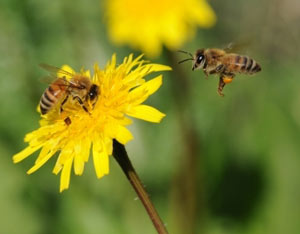
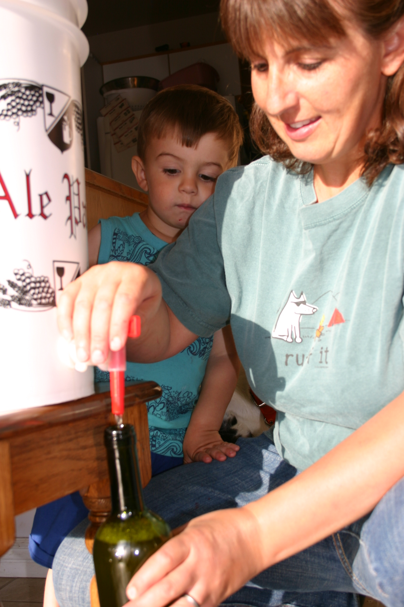

How To Make Mead
You can make this delicious and refreshing wine that requires no ingredients beyond yeast, water and honey.
By Amy Grisak
November 3, 2009
I keep bees at my home here in Montana, and each year we use some of the honey from our hives to make mead. Not many drinks can boast the long and illustrious history of mead - most likely the first fermented beverage known. When honey combines with water and yeast, a delightful reaction occurs.
For the home-brewer, mead is one of the easiest wines to make. Traditional mead is a little on the sweet side, although it mellows with age.
Making mead requires the same equipment as winemaking. Before beginning, make sure everything is scrupulously clean to ensure proper fermentation. Yeast is sensitive, and sanitizer remnants from a previous batch could inhibit growth or taint the flavor of your finished mead.
Let the Brewing Begin!
For a basic batch that will produce about 25 bottles of mead, you’ll need 16 to 18 pounds of honey, 5 gallons of unchlorinated water, 5 grams of wine yeast and 2 1⁄2 teaspoons of yeast nutrient (optional) to aid the process. You’ll also need some winemaking supplies. Check out Midwest Homebrew and Winemaking Supplies, or a local home brewing store.
To begin, bring 2 gallons of water to a boil on the stove in a large, non-aluminum pot (stainless steel or enamel is the best to avoid affecting the taste). Reduce the heat and add the honey. Stir until it’s completely dissolved, and simmer for 30 minutes. Skim off any scum that forms on top. This helps reduce the cloudiness in the finished mead.
Pour the honey and water mix into the fermentation bucket; then add the rest of the water. This mixture of honey and water is called the “must.”
Meanwhile, if you’re using a packet of dry yeast, soak it in a half cup of warm water for at least 10 minutes before adding it to the must. Allow the must to cool to below 80 degrees Fahrenheit before adding the activated yeast and the yeast nutrient. Stir the must for at least five minutes to aerate the mixture.
Put a lid on the bucket and attach the airlock (a device that allows gases to escape without allowing air to enter the container). During fermentation, the sugar in the honey turns to alcohol and carbon dioxide. Without an airlock to release the pressure, you’ll be surprised by a small explosion and a big mess.
Place the bucket in a spot where the temperature is between 55 and 70 degrees. Leave it undisturbed during this primary fermentation. You’ll most likely notice it bubbling after two to three days. The primary fermentation will take two to four weeks. Reduced fermentation is evident by a quiet airlock; after it’s still, transfer the mead into the carboy (a large glass or plastic container that can be sealed using an airlock).
When you pour the mead from the fermenting bucket into the carboy, be careful not to tip up or disturb the bucket to minimize pouring any particulates into the carboy. You’ll probably have a little mead left in the bottom of the bucket, but it’s best to toss it. In the carboy, add enough unchlorinated water to bring the mead level up to the base of the neck to reduce the amount of oxygen in this second step.
Bottling (and Enjoying) the Mead
You can bottle your mead after it’s been in the carboy two to four weeks. Siphon the mead into the bottles and cap. Again, be careful to leave the sediment at the bottom to have a more refined drink.
You can use wine bottles with a cork. Seal them with wax and store them on their sides. Beer bottles are another good option, particularly if you’d like to give samples away to uninitiated mead drinkers. Cap them and store them in any cool, dark area, such as a basement.
Mead develops its true flavor during its time in the bottles. Be patient. Open a bottle after six months to taste how it’s progressing, but don’t be disappointed. Mellowing a batch of mead for a year is typically the minimum, and as with many good wines, it gets better with age.
Find more photos showing the process of making mead in this mead photo gallery. You can read more about Amy Grisak’s homestead in her Firsthand Report, Fun and Food for Every Season. And learn more about raising bees for honey in the articles Keep Bees, Naturally and Keeping Bees Using the Top-bar Beekeeping Method.
|
 ISTOCKPHOTO/AMIT EREZ If you have honey, why not make honey wine, also known as mead? If you keep bees, you can use honey from your own hives, or look for delicious local honey at your farmers market or grocery store. |
 MEGAN PHELPS The jar of honey in this photo will be used to brew several gallons of mead. The brewing process is fast - it only takes about an hour. But it will be quite some time before the mead is ready to drink. Mead should age for a minimum of one year. The glasses in this photo are filled with mead that has been allowed to age for five years. |
AMY GRISAK To make mead, you begin by boiling water, then adding honey to the pot, and letting it dissolve. |
|
 AMY GRISAK For a basic batch that will produce about 25 bottles of mead, you’ll need 16 to 18 pounds of honey. |
|
|